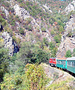
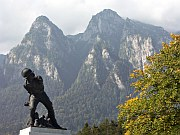

Disclaimer: These pages are not actively maintained, and some of the practical information on the site is out of date. I am working on a new version of the site that will focus more on my photos and memories of travel in Southeast Europe, and less on practical details that too easily become obsolete. In the meantime, please treat the information here with caution.
Scenic train journeys in the Balkans
The mountainous terrain that covers so much of the Balkans has hindered the development of railways, but it ensures that the lines that do exist often pass through interesting landscapes. My own favourites are the trips from Bansko to Septemvri and from Belgrade to Bar - both are well worth going out of your way for. The Thomas Cook Rail European Rail Map highlights these and other scenic routes.
Bulgaria
Train at Bansko

Velingrad Gorge
Bansko - Septemvri
The journey on the narrow gauge line from Bansko to Septemvri may just be the slowest train trip in the Balkans - and believe me, there is some tough competition for that title. From the tourist's point of view this is all to the good - the train may occasionally be outpaced by ambling sheep, but the slow pace makes it easy to lean out the window to take photos. The journey begins in the shadow of the Pirin range at either Bansko or nearby Dobrinishte. The line skirts the Rila Mountains, snow-capped for much of the year, before heading into the western Rhodope ranges. The scenery is varied as well as beautiful, with a mixture of deciduous forests (especially nice in autumn), conifers, and open pasture. Along the way you'll pass the highest station in the Balkans (Avramovo, 1627m), Muslim villages with soaring minarets, the spa town of Velingrad, and several stations whose buildings seem absurdly grandiose for a modest branch line. Just when you think the show is over, the train plunges into the narrow Velingrad Gorge before emerging onto the Plain of Thrace.
Septemvri is easily reached by train from Sofia or Plovdiv as it is on the main line between those two cities. Bansko also has regular bus services from Sofia. There are four daily trains each way on the Septemvri-Bansko line, taking just under five hours. These are humble local trains and there has been no attempt to make them appealing to tourists, so don't expect any kind of comfort. You can read a detailed trip report by another traveller here.
The Iskâr Gorge: Sofia-Mezdra
Bulgaria's railways tend to run in an east-west direction; this is one of the few that runs south-north, breaking through the Balkan Mountains (Stara Planina) to the north of Sofia. Keep an eye out for the station called simply 'Balkan', and another rather incongruously called 'Tompsan' after one Major Thompson, a British soldier who fought with Bulgarian partisans in 1944. The scenery is at its best further north, where the rocky walls of the Iskâr Gorge rise steeply on both sides of the track. Look closely at the top of the cliffs near the Lakatnik halt: you may be able to glimpse a huge Communist-era monument and the nearby 'Eagle's Nest', a precariously located shelter for climbers. The journey to Mezdra continues past cliffs of banded red and white rock - looks out for goats perched in seemly impossible locations. Although the scenery is dramatic it is fairly domesticated - there are quite a few villages in the valley.
Lakatnik Station
This is a major route with 12 fast trains daily from Sofia to Mezdra (2 hours), continuing to a variety of destinations including Varna and Bucharest. There are also six local trains, which are useful if you want to stop at one of the small halts within the gorge - Lakatnik is a good choice as there is a fairly easy footpath to the top of the cliffs.
Also in Bulgaria
The line from Sofia to Kazanlâk follows the valley between the Balkan and Sredna Gora ranges. It intersects at right angles with the Stara Zagora - Veliko Târnovo line, which cuts through both ranges. Although it's a very nice route, the parallel road is probably even more interesting. It takes a higher route, climbing over the roof of the Balkan Mountains via the Shipka Pass. If you want to take the train you'll need to plan carefully as there are only five services daily - buses are more frequent.
Serbia and Montenegro

Belgrade-Bar Line
River Lim
Belgrade - Bar
Completed in 1976, this railway was a great feat of engineering - a quarter of its length consists of bridges and tunnels. The first stretch after leaving Belgrade is rather dull, but after Valjevo the line enters a landscape of gentle green hills, followed by the rounded mountains and isolated villages of the Zlatibor region. After passing through Bosnia for a few kilometres the track runs alongside the Lim River through southern Serbia and northern Montenegro. Although the Adriatic is not far away, the waters of the Lim ultimately make their way via the Danube to the distant Black Sea. Beyond the line's highest point at Kolašin the scenery becomes even more dramatic, with glimpses of the Moraca River in a gorge far below the track. A side canyon is crossed by means of one of the highest railway viaducts in the world, nearly 200 metres above the Mala Rijeka River. After Podgorica the line runs alongside Skadar Lake before plunging into one last tunnel and reaching a rather anti-climactic end in the outskirts of Bar.
Four daily trains, two of which run overnight, run from Belgrade to Bar. The scheduled journey time is eight or nine hours, but the line has a reputation for delays. There are also several slow local trains along segments of the line - these can be very crowded.
I met especially friendly fellow travellers on both my journeys on this route - in 2004 the very idea of a foreign tourist venturing beyond Belgrade seemed to be a great novelty. The topics of conversation included Serbian politics (this required frequent use of the word 'katastrof'), my shameful lack of children at the advanced age of 31, the alleged laziness of Montenegrins, and an attempt to persuade me that Jaffa Cakes are a Yugoslav invention. As my conversation partners had been force-feeding me with those same biscuits throughout the journey, it would have been churlish to argue.
Also in Serbia
The Šargan Eight line, at Mokra Gora near Užice in western Serbia, is a small remnant of the Belgrade-Sarajevo line that closed in 1974. It has recently been reconstructed as a tourist attraction. I haven't travelled on it myself but it is said to be a beautiful trip. It takes 40 minutes to cover a distance of less than four kilometres as the crow flies. This would undoubtedly threaten the Bansko line's crown as the slowest railway in the Balkans, but as the Šargan Eight is purely a tourist line it doesn't really count.
Romania
Bucegi Mountains

Busteni
The Prahova Valley: Ploieşti - Braşov
The flat Wallachian plain around Ploieşti gives no hint of the scenery to come, but soon the train joins the Prahova River and begins to gain altitude. Near Sinaia the valley narrows and the Bucegi Mountains appear as a wall of rock to the west; to the east the slopes are gentler. Sinaia is a good place to take a break, either to visit Peleş Palace or to take a cable car to the plateau at the top of the Bucegi Mountains. Continuing by train towards Buşteni, look out for the towering cliffs of Caraiman and Costila to the west. Weather permitting, the two peaks can be identified respectively by a huge cross and a communications mast, 1600 metres above you. Buşteni is the starting point for many hiking trails and another cable car. If you pass through on a summer Sunday evening you'll probably see hundreds of hikers waiting for a train back to Bucharest.
The line continues to the Predeal Pass at an altitude of over 1000 metres. Although the Prahova Valley is sometimes allocated to Transylvania by travel guidebooks, it is actually in the province of Wallachia; at the Predeal Pass you enter Transylvania "proper". This may not seem very significant now, but until 1918 this was the border of the Austro-Hungarian Empire. From the pass the line winds its way downhill to Braşov.
This is a busy line with 24 fast trains daily (journey time just under 2 hours), plus some very slow personal trains. Most travellers are likely to start or finish the journey at Bucharest, 40 minutes from Ploieşti.
Also in Romania
Romania has many stretches of track with interesting scenery, often where the line crosses the great arc of the Carpathian Mountains that splits the country in two. As well as the Prahova valley line, the Timişoara-Craiova and Cluj-Suceava routes fall into this category, as do several minor lines. Even away from the main mountain ranges, travel through Transylvania in general is very pleasant, with large areas of open countryside. The line through the Crişul Repede valley between Oradea and Cluj is a particularly appealing trip through rolling green hills - a nice introduction to Romania if you've arrived from the Hungarian plain. There are nine fast trains per day on this route (2.5 hours).
The Vaser valley forestry railway, at Vişeu de Sus in the far north of Romania, is a privately operated line that passes through isolated countryside near the Ukrainian border. In addition to trains carrying forestry workers, a tourist train operates during the summer. More information is available from Ecotours Viseu de Sus.
Bosnia and Herzegovina

Neretva Valley
Sarajevo-Mostar-Ploče
A few years ago this route could have been described as a "hidden gem", with near-empty carriages rattling through the highlands of Herzegovina down to the Adriatic coast. Happily the Bosnian rail system has made at least a partial recovery, and while buses still carry far more people than trains, the Sarajevo-Mostar trains are generally quite healthily populated with both locals and tourists.
From Sarajevo the line climbs through the forested hills of central Bosnia, using switchback curves and multiple tunnels to climb to the watershed between the Black Sea and the Adriatic. (Get used to the tunnels - there are 102 of them). At Konjić the track joins the Neretva River, which it follows for the rest of its journey. Over a short distance there is a marked change in the scenery, rounded green hills giving way to the rocky limestone crags of Herzegovina, notably the Prenj mountains to the east. After Jablanica the valley narrows to a gorge, with the road and railway somehow squeezed into the available space on opposite sides of the river - this my favourite part of the route.
Around Mostar (an essential stop) the valley broadens and the scenery becomes less remarkable, although there are good views of Velez Mountain to the east. About half an hour south of Mostar, look out for the old Ottoman town of Počitelj across the river - the tower overlooking the town is easy to spot. At Čapljina there is a short wait while the Bosnian locomotive is changed to a Croatian one, which seems like a wasted effort given the short distance to be travelled on Croatian soil. Finally the line passes the fertile Neretva delta before reaching a rather ignominious end at the drab port of Ploče.
There are only two daily trains on this route. The journey time from Sarajevo is just under 2.5 hours to Mostar, or 4 hours for the full trip to Ploče. The schedule is not always convenient for travellers, especially in winter when both the morning and evening trips take place in semi-darkness. Fortunately it is possible to follow a very similar route by road. Between Sarajevo and Mostar, buses are far more frequent than trains and give you almost the same views, with the advantage of not going through long tunnels. All buses along the coast road from Dubrovnik to Split call at Ploče, but if you are heading to Croatia it may be more convenient to get a direct bus from Mostar to Split or Dubrovnik.
Greece

Vouraikos Gorge
The Vouraikos Gorge: Diakofto - Kalavrita
Consisting of just two small carriages, the trains on this line ascend rapidly from the coast to the mountainous interior of the Peloponnese via a narrow gorge. A cog-wheel mechanism is used on the steepest sections of track to allow an ascent of 750m over a distance of 22km - hence the Greek name "odontotos" ("tooth train"). The scenery is very impressive, but if the train is crowded (which is quite likely, as it's a popular excursion) it can be difficult to get a really good view of it. I have heard that the best views are from the tiny first class section, but these tickets were sold out when I visited so I can't vouch for the difference. You may come across some rather overblown praise for this trip in tourist literature, which should be treated with a little caution - it's fun, but it won't change your life.
If you'd like to see more of the gorge, walking part of the route is a possibility - some people hike down from the intermediate station of Zachlorou, perhaps after visiting the nearby Mega Spileon Monastery.
There are five return trips daily, with a journey time of one hour each way. Diakofto itself is easily reached on the fairly busy line from Athens to Patras.
Also in Greece
The inland branch of the Peloponnese line, from Corinth to Kalamata via Tripoli, is said to be very scenic. I have also heard good reports of the line along the Nestos Valley near Xanthi in Northern Greece.
Most na Soči station

Sava River
Slovenia
Transalpina: Jesenice to Nova Gorica
The Transalpina line, also known as the Bohinj Railway, cuts across the northwest of Slovenia through the foothills of the Julian Alps. When it opened in 1906 it served an important strategic purpose, connecting Vienna with the main port of the Austro-Hungarian Empire at Trieste. These days it's a rather quiet branch line.
I've only travelled on this route once, and due to thick fog I couldn't see very much, but I am confident that the scenery must be wonderful on a good day. Heading south from Jesenice the track passes above Lake Bled, allowing a view of Slovenia's only island, before following crossing the Bohinj Valley; it skirts the Triglav National Park but doesn't pass close to Lake Bohinj. It then disappears into the six-kilometre Podbrdo tunnel before emerging in the peaceful valley of the little River Bača. This section of the line is also served by auto-trains, allowing motorists to avoid a difficult stretch of mountain road. Leave the train at Most na Soči if you wish to explore the beautiful Upper Soča Valley. The train continues as it along the lower Soča River, eventually crossing it by means of the huge stone arch of the Solkan Viaduct just before reaching Nova Gorica and the Italian border.
There are 7 trains on weekdays, 4 on Sundays (2 hours); in summer there are also steam-hauled "Oldtimer" excursion trains. Jesenice is on the main line from Ljubljana to Austria and is also easy to reach by bus. However it's not a tourist town, so many people join the train at nearby Bled Jezero station, which is on the opposite site of the lake from Bled town (and most accommodation).
The Sava Valley: Ljubljana to Zagreb
The line between these two capital cities hugs the north bank of the Sava River for much of the way. It's not quite as dramatic as some of the others on this page, but it's a very pleasant journey and also a useful route from a purely practical point of view. If you're starting a tour of the Western Balkans here, it's an excellent introduction to the green-tinted rivers and limestone crags that appear throughout the Dinaric Alps.
Republic of Macedonia
Prilep to Skopje
Macedonia's limited rail network means that it's not a great country for train travel, but the Prilep to Skopje line allows the possibility of a break from road travel, with the bonus of some attractive scenery along the way. Leaving the tobacco fields of Prilep behind, the line heads past the towers of Markovi Kuli into the mountains of central Macedonia. From the Babuna Valley you may catch a glimpse of the rock fact Solunska Glava, the highest peak in the region - but you'll need better weather than I had. The main Prilep-Veles road follows a different route far to the east, and the villages along this part of the line line feel quite isolated. At Veles the mountains are left behind and the track follows the Vardar River to Skopje.
There are four trains daily between Skopje and Prilep (three hours), but depending on the time of year only two or three during daylight hours. All these trains continue across the Pelagonian plain from Prilep to Bitola.
Further information
Timetables for most journeys mentioned above can be checked on the websites of the relevant national rail operators - see the Links pages in the individual country sections of this site. In most cases schedules are also available from the European Rail Timetable.
See more photos of the places mentioned above: The Balkanology Galleries